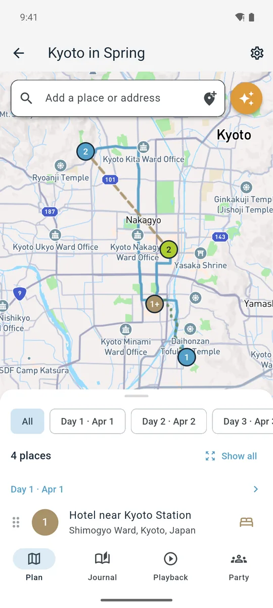
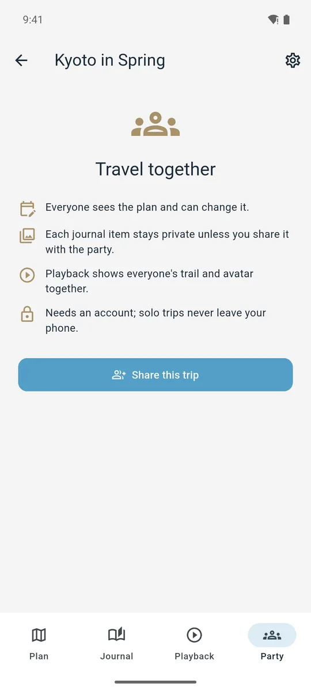
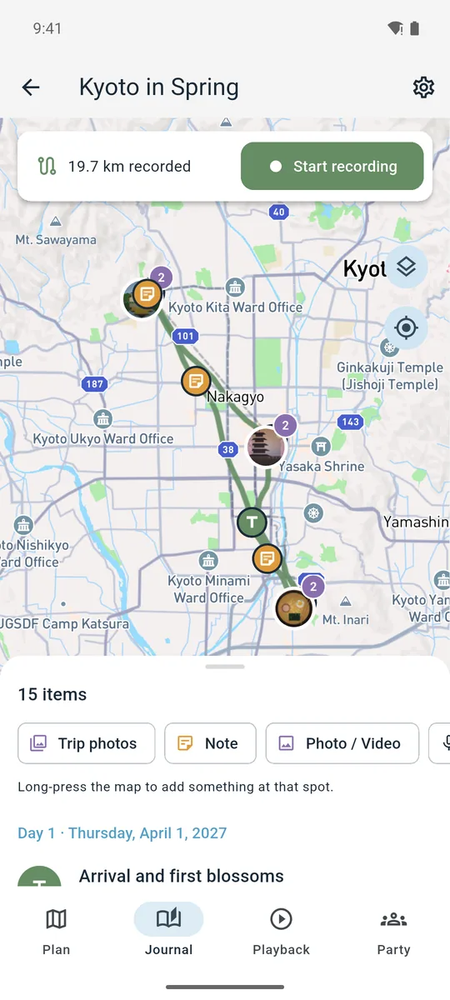
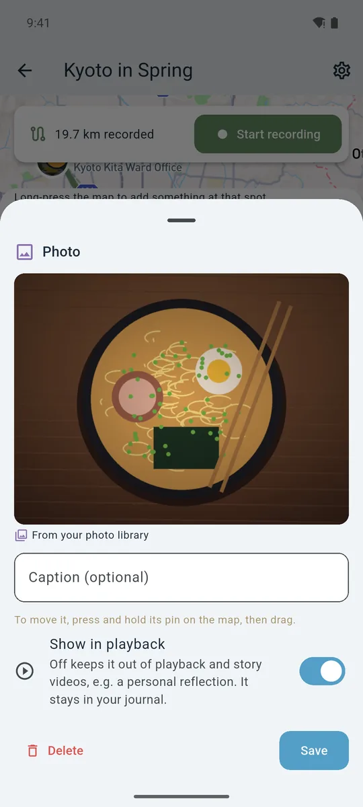
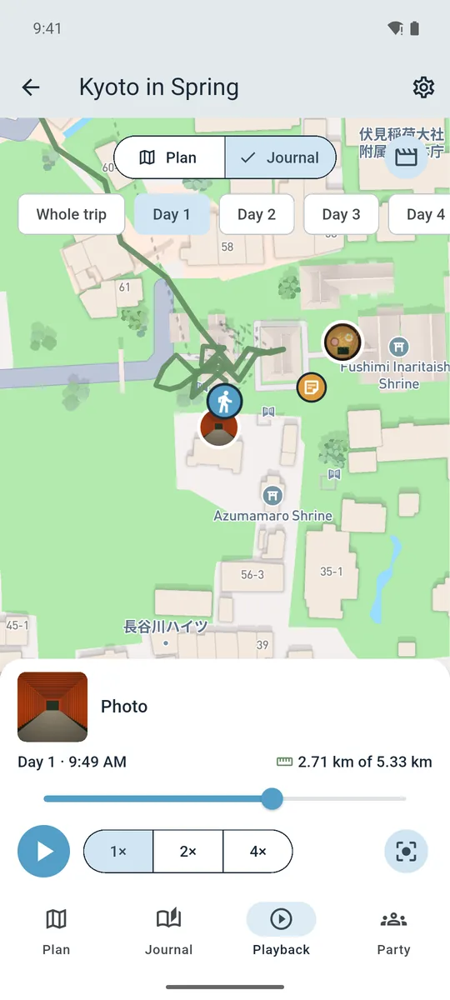
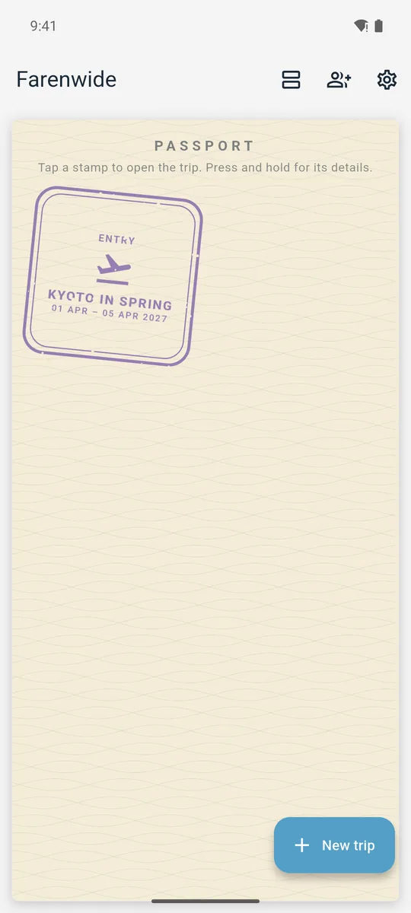

The story of a trip
From the first idea to the passport stamp.

Dream it up
Pin the places you want to see, arrange them into days, and see the route between every stop.

Bring your people
Share the trip with a simple code. Everyone sees the plan, and your journal stays private until you share it.

Hit the road
Farenwide records the path you travel, and your notes and photos land right where they happened.

Keep the moments
Add photos, videos, voice memos and notes as you go. That bowl of ramen deserves remembering.

Relive it
Back home, watch the whole trip play back on the map, one moment at a time.

Collect the stamp
Every trip earns a stamp in your travel passport, ready for the next adventure.